COLUNA CERVICAL - AP
Paciente
Em ortostático, PMS sobre a LCE, braços estendidos ao longo do corpo, cabeça ligeiramente estendida de modo que a linha que vai do mento à base do crânio esteja perpendicular ao plano da estativa.
Chassis / Filme
18×24 longitudinal panorâmico ou 24×30 transversalmente.
Raio central
com um ângulo de 15° a 20° cranial, orientado para o osso hióide (C4).
DFF
1,00 m – com bucky.
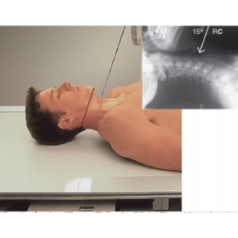
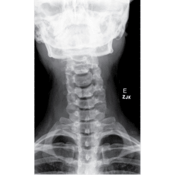
Observação: Em apnéia expiratória.
COLUNA CERVICAL - PERFIL
Paciente
Em ortostático, PMS paralelo a LCE, braços estendidos ao longo do corpo, cabeça ligeiramente estendida.
Chassis / Filme
18×24 longitudinal panorâmico ou 24×30 transversalmente.
Raio central
⊥ na horizontal orientado para o osso hióide.
DFF
1,30 – 1,50 m – com bucky.
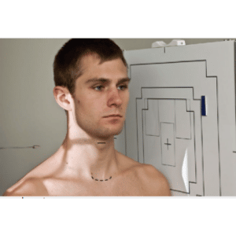
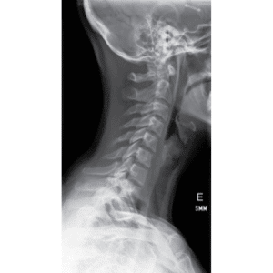
Observação: Em pacientes traumatizados realizar o exame em decúbito dorsal com raios horizontais.
Não retirar colar cervical quando politraumatizado.
COLUNA CERVICAL - TRANS-ORAL
Paciente
Em decúbito dorsal ou ortostático com o PMS sobre a LCM/LCE, braços estendidos ao longo do corpo, cabeça ligeiramente estendida de modo que a linha que vai dos incisivos superiores até a base do crânio esteja perpendicular ao plano da mesa.
Chassis / Filme
18×24 na longitudinal panorâmico.
Raio central
⊥ orientado para o centro da boca.
DFF
1,00 m – com bucky.
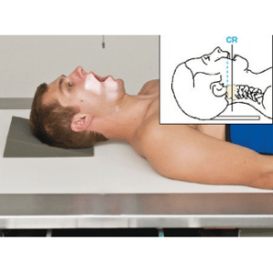
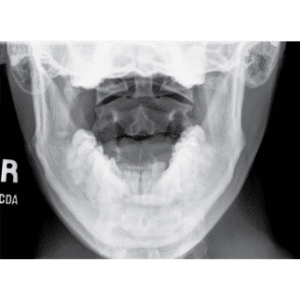
Observação: Este exame poderá ser realizado tanto em decúbito quanto em ortostático, o que irá determinar serão as condições do paciente. Poderá usar cilindro de extensão ou colimação adequada.
COLUNA CERVICAL - OBLÍQUAS AP/PA
Paciente
Preferencialmente em ortostático com os braços estendidos ao longo do corpo, PMS fazendo um ângulo de 45º com o plano da estativa, cabeça ligeiramente estendida e em rotação de 25º internamente para o AP e externamente para o PA.
Chassis / Filme
18×24 longitudinal panorâmico ou 24×30 transversalmente.
Raio central
Com um ângulo de 10° a 20° cranial para o AP, e caudal para o PA, orientado para o osso hióide.
DFF
1.00 a 1.30 m – com bucky
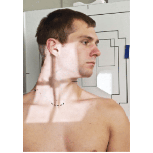
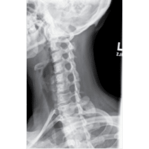
Observação: A rotação realizada com a cabeça serve para estudarmos os primeiros espaços livres de sobreposição.
COLUNA CERVICAL - PERFIL DINÂMICO / EXTENSÃO E FLEXÃO
Paciente
Em ortostático, PMS paralelo a LCE, braços estendidos ao longo do corpo, cabeça estendida ao máximo para extensão e fletida ao máximo para flexão.
Chassis / Filme
18×24 / 24×30 longitudinal ou transversal, panorâmico.
Raio central
⊥ na horizontal orientado para o osso hióide.
DFF
1,30 – 1,50 m – com bucky.
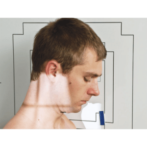
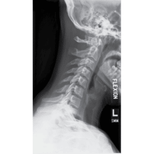
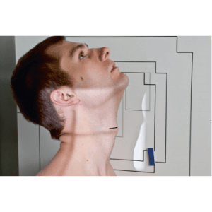
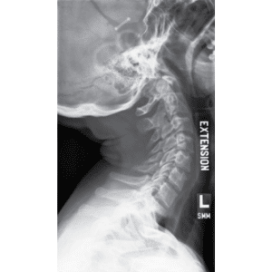
Observação: Em apnéia expiratória.
COLUNA CERVICO-TORÁCICA (Método de Twining)
Paciente
Paciente lateralizado, PMS paralelo à LCE/LCM, o membro superior mais próximo da estativa deverá ser elevado apoiando a mão sobre a cabeça, o membro mais distante estendido sobre o corpo.
Chassis / Filme
18×24 longitudinal panorâmico.
Raio central
⊥ na horizontal/vertical, orientado ao nível das articulações esternos claviculares.
DFF
1,30 – 1,50 m – com bucky.
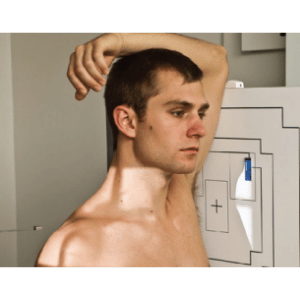
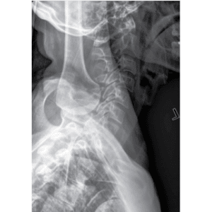
Observação: Não retirar colar cervical quando politraumatizado.